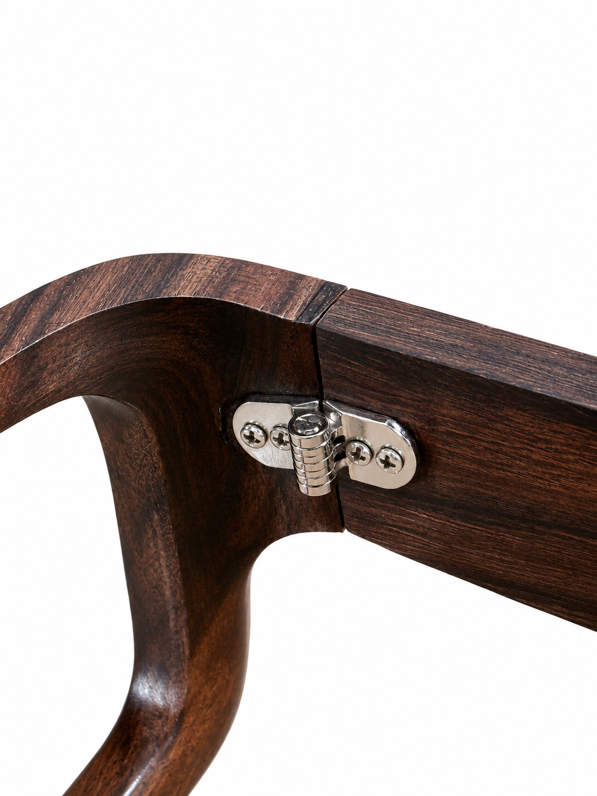

There are objects you wear.
And there are objects you
experience.
ALA is both.
Crafted from a single, continuous piece of natural wood, each frame carries not just form— but presence.
Seen. Felt. Lived.
The Product
Monolithic Wooden Eyewear
ALA creates luxury eyewear frames from rare natural materials such as sandalwood, teak, and rosewood, refined with subtle gold inlay.
Alive in texture. Deep in character. Distinct in scent.
Its grain carries memory. Its fragrance carries identity. With every wear, it reveals itself—slowly, continuously.

Gold
Drawn from the earth's core. Enduring. Elemental.
Set into the wood with restraint, it does not decorate— it defines.

Craftsmanship
Wood resists.
It bends only when understood.
Each frame is shaped through a process of controlled forming, allowing the material to take form without losing its continuity.
The temple arms are derived from the same piece, sectioned and returned to movement— without losing origin.
The grain flows. The structure remains whole.
Each frame is formed from a single, continuous piece of wood, where the front structure and temple arms originate from the same source.
- No assembly.
- No interruption.
- No compromise.
The grain flows uninterrupted— and so does the experience.
The Experience
More than what is seen.
Sandalwood is not just material.
It is
presence.
As it rests against you, it releases a natural, subtle fragrance— warm, grounding, unmistakable.
Not applied. Not added.
It emerges from within the wood itself.
Over time, it becomes familiar. Personal.
A quiet signature that moves with you— perceived only by those close enough.
Materials
Sandalwood
A material that matures over decades. Warm, fragrant, deeply personal.
Teak
Resilient and golden. A wood that ages with grace and strength.
Rosewood
Rich, dark grain with an almost sculptural depth of tone.
Ebony
Dense, lustrous black. The rarest of the collection.
Optics, Elevated
The experience extends beyond the frame.
ALA offers a curated selection of high-performance lenses, chosen for clarity, precision, and longevity.
Each lens is selected and fitted to match both the frame and the wearer— ensuring a complete alignment of vision and form.
Custom Creation
Made for one.
Each ALA frame is custom-created to your exact dimensions— measured, balanced, and refined to align with your natural form.
Proportion is not adjusted after creation. It is resolved from the beginning.
The result does not sit on you. It aligns with you.

A Personal Language of Detail
Beyond form, each piece allows for individual expression— not as embellishment, but as identity.
Gold Inlay Motifs
Intricate patterns, symbols, or cultural references— designed and inlaid in gold, chosen by the wearer.
Initials & Signature Marks
Personal engravings or gold-set initials, integrated seamlessly into the structure.
Precious Stone Inlays
Selected stones can be embedded within the frame— based on personal significance, astrological alignment, or individual preference.
Each detail is placed with restraint, ensuring it becomes part of the form— never separate from it.
A Process, Not a Purchase
Every ALA frame is created through a guided process— where material, measurement, and meaning come together.
It is not chosen from a shelf. It is arrived at.
Enduring Ownership
What is made with this level of intention is meant to last beyond time.
Each piece is accompanied by a lifetime assurance— a commitment to its continuity.
Begin Your Process